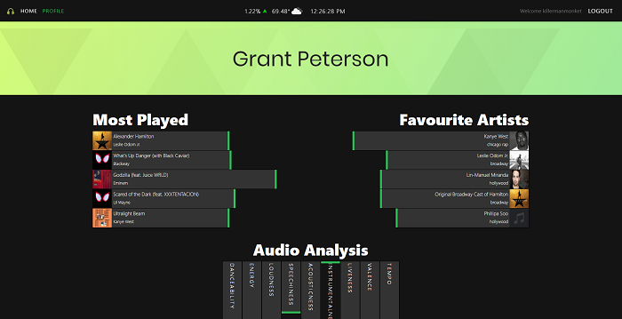
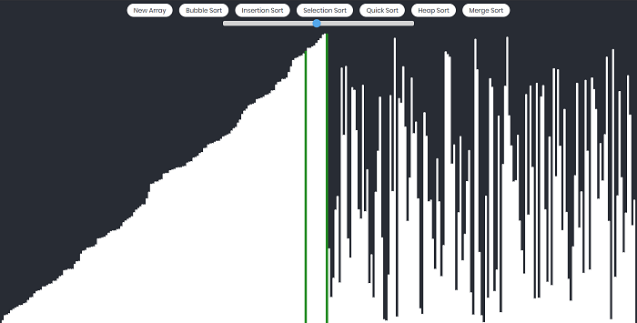

Jukebox



Application which uses the Spotify REST API to build unique playlists with high granularity: users can alter up to 12 variables such as Key, Valence, Danceability, etc... combined with factors such as weather and stock market performance to create playlists that will automatically populate their Spotify library.
TFT Tracker

Leaderboard and character lookup for Teamfight Tactics autobattler using Riot REST API. Includes leaderboards for all ranks and a robust profile lookup system that includes detailed match history.
Pathfinder


Visualizer for pathding algorithms including: Djikstra's Algortihm and A*. Supports building impassable walls as well as difficult to pass weights that influence the optimum path.
Sorting Visualizer

Visualizer for various sorting algorithms including: Bubble Sort, Selection Sort, Insertion Sort, Quicksort, Heap Sort, and Merge Sort.
Weather App

Weather forecast application using Openweather REST API. Supports searching by city or country and displays current weather alongside the 5-day forecast.
Pix

Stock image searcher using Unslash REST API with full user login system that allows saving photos to a user profile. Includes data visualizations regarding most popular search terms.